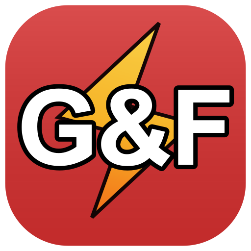

Verfügbar
Desktop
Electron-Client mit Tray, Updates und nativen Benachrichtigungen — jetzt per Download, apt, pacman oder Chocolatey.
Offizieller Desktop-Client
Schneller Zugriff, native Benachrichtigungen und absolut ablenkungsfrei. Installiere das Portal direkt auf deinem Desktop.

Version 1.0.50
Die Desktop-Apps für Windows, macOS und Linux sind da. Parallel bauen wir die nativen Mobile-Clients und bereiten die Microsoft-Store-Version vor — damit du das Portal bald auf jedem Gerät nutzen kannst.
Electron-Client mit Tray, Updates und nativen Benachrichtigungen — jetzt per Download, apt, pacman oder Chocolatey.
Native App für iPhone und iPad in Swift. Build und Upload laufen; External TestFlight und App-Store-Review sind eingereicht — Release folgt in Kürze.
Der Android-Client ist in aktiver Entwicklung — gleiche Portal-Funktionen, optimiert für Baustelle und unterwegs.
Dieselbe Windows-Desktop-App als MSIX für einfache Firmen-Rollouts — Paket und Store-Einreichung sind in Vorbereitung.
Mehr zu Kamera, Mikrofon und Benachrichtigungen auf allen Plattformen: Berechtigungen.
Alles, was du im Browser kennst — mit dem Komfort einer nativen Anwendung.
Keine Browser-Tabs, keine Lesezeichenleiste. Fokussiere dich zu 100% auf das Portal und deine Projekte.
Erhalte wichtige Portal-Updates direkt über das Info-Center von Windows oder macOS.
Die App minimiert sich in den System-Tray und ist jederzeit mit nur einem Klick wieder geöffnet.
Belegfotos, Sprachdiktat und optionale GPS-Koordinaten für Tagesberichte – nur wenn du sie im Portal nutzt.